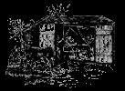
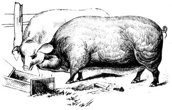
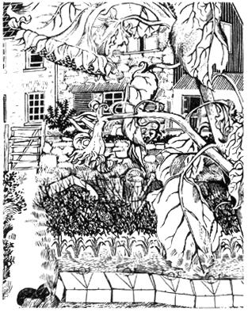
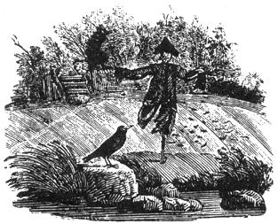

Copyright © 1973 by John and Sally Seymour. Introduction copyright © 1973 by Schocken Books. Inc.
Ah, the vicissitudes of time. Two years ago, when there were NO currently relevant small-scale-farming introductory handbooks available, many of us welcomed the publication of Richard Langer's Grow It! with open arms. Now that we're all older and more experienced, however, some folks find it increasingly easy to criticize that breakthrough beginner's guide (see the Feedback sections of MOTHER NOS. 23, 24 and 25).
Which brings us to another breakthrough book that is just as important (probably more so) now as Grow It! was two years ago... and which may well come up for its share of criticism in another 24 months or so.
Be that as it may, John and Sally Seymour's record of 18 successful years on a shirttail-sized homestead in England is important now and should offer welcome encouragement to today's back-to-the-landers... both real and imaginary. I started serializing this book in my No. 25 issue and I'm sure that many readers will want a personal copy for their home libraries. -MOTHER
The very idea of being fed, or a family, being fed, by daily supplies, has something in it perfectly tormenting.
WILLIAM COBBETT: Cottage Economy
He meant, of course, supplies from the shops. And I am sure that if the 'average housewife' spent half the time that she spends in that silly occupation shopping cultivating a small garden at least she would never have to spend any of her housekeeping money on vegetables.
On a farm or smallholding, the garden should be for growing those vegetables and fruits that cannot be better grown on a field scale. Perennial vegetables, such as asparagus, globe artichokes, luxury crops such as celery, tomatoes, squash, mellons, are obvious candidates for the garden rather than for the field. Also, you don't need much of most garden crops, and therefore it is useless growing them on a field scale. There are many smallholdings, of course, where only permanent grass is grown in the fields, and where the garden is the only arable land on the place. Then all must be grown in the garden.
The making of a garden from virgin soil is hard work, but the work can be eased in various ways. When Sally and I came to Pembrokeshire we found, next to our rather primitive and deserted house, a little circle of tumble-down stone 'hedge', as stone walls are called in this county, which had obviously once been a garden. In the middle of this was an outdoor lavatory, with a bucket in it, the ground was invisible under a very rank growth of long grass and weeds, and under the weeds was an enormous accumulation of rubbish. For many years, one would guess, the garden hadn't been 'farmed' (a way of saying looked after) and had simply been used as a rubbish dump. It was the only spot on the farm where cows and the ubiquitous Welsh sheep could not get.
Having removed the outdoor lavatory for firewood (we used the woods for a long time, and a spade of course) we put a pignetting fence around the garden and put two sows in it. As the sows cleared the weeds and grass, which they did in a very few days, we realized the enormous quantity of rubbish. There must have been years of accumulation-and no matter how deep those pigs dug they brought up more rubbish. I erected a shute leading down from the garden to a wheelbarrow which I kept permanently stationed outside. After perhaps a day spent doing nothing else but barrowing rubbish away it was a matter of, two or three times every day, just going into the garden and putting such new rubbish as the pigs had unearthed for me on the shute, and every now and then emptying the wheelbarrow. For about a month rubbish was still coming up, but less and less. After a couple of months we felt it was time to move the pigs anyway, for their own sakes, and by then no more rubbish was forthcoming. Also, every perennial weed had been destroyed, the land had been dug down to several feet depth, and been heavily dunged by the pigs.
Sally made it her task to rebuild the fallen-down stone walls. The land anyway had been very stoney, and while I had been clearing the rubbish I had automatically flung every store that came to my hand to the side. Sally, with great skill and determination, in little oddments of spare time, rebuilt the stone walls, and she did it so well that they stand there straight and upright to this day. All the stones were removed from the garden, and put to good use in the surrounding wall. I made a little gate out of split ash for it. Sally has made this garden her especial pride and joy. I limed it once (for our soil is short of lime) and slagged it once (for we are short of phosphate) but my guess is that it will never have to be limed or slagged again. For Sally, every year, barrows in loads of muck. It is immensely heavily manured. She digs it over very carefully with the spade at least every year. She seldom suffers a square yard of it to remain vacant for long. She has half a dozen cloches under which she nurtures delicate things like melons in the summer, and hardy things like lettuce in the winter. It is a tiny garden, but it produces far bigger crops than my 'Long Garden' which I plough up every year with the tractor, and which is in such a lamentable state at the moment.
If you neglect a garden, or keep it in a state of semi-neglect, it is hell and will be a constant source of labour and anxiety to you. If you keep it under control though, and get the soil kind and friable by constant mucking or composting and constant cultivation, every task is easy and pleasant. Hoe weeds as soon as they appear. Some people will tell you that if you put a lot of compost on your land you won't have to hoe. This is rubbish-whatever you do you will have to hoe, unless you constantly douse your garden with toxic weed killers which will end up by killing you in the end. Put as much compost on your land as you can possibly get hold of: or as much muck, preferably muck from a variety of animals and not from just one species of animal. The more organic matter you can get in your soil the more easily you will be able to work it, weed it, plant it, and harvest your crops. Hoeing my Long Garden, which is new and has had very little working or manuring, is hell. It is like hacking at concrete. Hoeing Sally's Round Garden is a delight. The hoe glides easily through the kindly soil and the weeds come out easily. My Long Garden needs tons more ploughing, and tons more muck. In due course it will get right. The Round Garden never suffers from drought: the beautiful soil conserves moisture; the Long Garden dries out in a week. Plants in the Round Garden look fine and healthy and withstand any disease; plants in the Long Garden go down to anything. Look upon this picture and on this! All this comparison is to urge the new gardener to start with a bit of land small enough to manage in the time that he will have available, and then keep on top of it! Get the weeds on the run and keep them there. Do not let any weed seed. Suffer not the perennial weeds to exist. Couch grass, the curse of mankind, ground elder, bind weed, must be hit and hit and hit again until they give up through sheer exhaustion.
Jerusalem artichokes are a very good smothering crop to start off with in a new garden-better than the more usually chosen potato. Potatoes will suffer badly from ground slugs and from wireworm when planted on newly-ploughed-up grassland or weed land. Jerusalem artichokes will suffer from nothing. Lime the ground, if it needs it, and shove the tubers into the ground in February close together-in rows a foot apart and a foot apart in the rows. They will grow so dense and strong that it will be like the Burmese jungle underneath them and no weed can exist. Then in the autumn if you possibly can, shove pigs in. Keep the pigs in for a couple of months. Then plough or dig. Leave over the winter and dig with the fork in the early spring. Then plant your garden crops. At first the artichokes will start coming up again-incredibly the pigs haven't got the last little bit-hoe them out. Mulch with compost if you have it, or muck. The gardening books will tell you to muck at certain times of the year and to dig the muck well in. Muck at any time, and if you don't dig it in the worms will dig it in for you.
If you don't want to keep pigs then plough or dig and plough or dig again and again. Grow a good smothering green manure crop if you can wait that long: mustard is very good. Lime before you broadcast the mustard-a quarter of a pound of ground or burnt lime per square yard. Rake the lime well in, broadcast the seed thinly and rake again. Plant any time in the summer. Dig the mustard in before it flowers-when it just begins to bud: don't let it get too tough. If you sow your mustard very early, say in March, you can dig it in in May and set a late crop of potatoes, or later, say in July when you can plant haricot or French beans. Some gardeners, in digging up old grass, grow two crops of mustard in a summer, digging the first in in July and the last in September. This is to dismay the wireworm, which can be a menace after old pasture, and which don't like mustard. For a winter cover there is nothing to beat Crimson Clover, which being a legume, creates nitrogen. Dig it in in February.
If you keep any large farm stock you just don't have to go to the bother of keeping a compost heap. For example, if you have pigs out of doors, behind pig netting or an electric fence, if you have any sense at all they will be on land which you intend to garden or farm on. Just chuck every piece of waste vegetation you have to the pigs. They will either eat it and turn it into the finest compost in the world overnight, or they will tread it into the ground where, activated by their dung, it will rot and make humus. If you keep pigs in a sty just chuck all waste vegetation into their yard. That is your compost heap. If you keep cattle indoors do the same with them. If you stable horses clear the dung out of the stable when you have to, chuck it in a heap, and add your waste vegetation to the heap. If you keep hens by what I call the 'Balfour Method', after Lady Eve who invented it (see MOTHER NO. 30), throw your 'compost material' in the straw scratching yard. Ducks and geese will compost it for you too, in their night quarters, if they sleep indoors.
If you have none of these animals though, build two bins of the size that common sense whispers is necessary, out of heavy old timber (small pine thinnings ripped down the middle with a saw will do, if pressure creosoted, and can be got cheaply from the Forestry Commission in some places; old railway sleepers are marvelous), lay double rows of bricks on the ground in one of them to let the air in, or staggered railway sleepers, and put your waste vegetation in that. It is best to put it in layers of say a foot thick; sprinkle some activating material over each layer alternated with a sprinkling of slaked lime. The activator can be any highly nitrogenous material. A high nitrogen proprietary fertilizer is fine, or poultry manure, or fish meal, or piss, or manure of any sort. And of course any kitchen waste at all-although it seems a crime not to put that through a pig first! But compost needs some highly nitrogenous substance to make it rot quickly and properly. Lime also helps it, as does air. Some people leave some vertical posts in their compost as they build it up and, when they have finished the heap, haul the posts out. This leaves chimneys for air. The compost heap is in effect a bonfire, as that great and eloquent philosopher of the organic garden and the compost heap, Lawrence D. Hills, has so often pointed out. The only thing you can justifiably burn in your garden is wood, and that is better, surely, burnt on the fire in your hall where it will do most good. Some people say 'but ah-if you burn things you get potash!' Well you do, but the potash was there before you burnt whatever it is, and will still be there if you don't burn it. Let wood rot and it will release its potash just as well as if you burnt it-and you will get its nitrogen too and, more important of all, humus. When one compost bin is full-start on the other.
We will assume that we have at last got on the right side of our garden, and are ready to plant things we can eat.
This world is absolutely full of books on gardening. I imagine that they come second in sheer numbers to books on cookery: and if a cook were to cook every dish in just one cookery book it would take her years and she would bankrupt her husband. But, if you live in the British Isles, I would unhesitatingly recommend Lawrence D. Hills' Down to Earth Gardening and/or his Grow Your Own Fruits and Vegetables . Mr. Hills is the most practical of gardeners, and yet he brings to the subject of gardening a high and questioning intelligence, and if he does anything, or recommends that anyone else should do it, he wants to know the reason for doing it. He writes delightfully, succinctly, and if a subject so complex and uncertain as gardening is can be instructed simply, he does so. And what I would recommend even more than Mr. Hills' excellent books, is that you make friends with a good local gardener, and humbly and respectfully ask his advice about things, and do what he says. We came to Pembrokeshire full of book learning and three years at an agricultural college and we just make do. Garfield Howells, over the valley, grows onions like our melons and shallots like our onions, and I don't suppose he's ever read a book on gardening or ever will.
But this book is not a gardening book, any more than it is a cookery book, and so I will aim to provide a rough guide only for the year's gardening work of the self-sufficient gardener who wishes to grow enough of the most ordinary vegetables to feed his family. In fact I will only mention garden crops that we grow ourselves.
As for rotation, I would say that in the garden, as in the field, it is very important not to keep growing the same things on the same ground year after year, and when I say the same things I mean things of the same family: thus cabbage and all the things akin like cauliflower and Brussels sprouts are brassica, and therefore akin to turnips and mustard, and potatoes are solanum and akin to tomatoes. This said the rules that should decide your rotation for you are pretty simple, and are these:
Potatoes do not like lime but they do like heavy dressings of muck or compost. In any case you should not put lime and muck on together, for the lime attacks the muck and wastes much of the nitrogen. Therefore plant potatoes after a heavy dressing of muck but no lime.
Brassica, one and all, like a lot of lime. If your soil lacks lime, therefore, grow brassica after potatoes, heavily liming first. The brassica will benefit by the heavy dressing of muck that the potatoes had, and the thorough cultivation and soil-stirring that the potatoes had, but the potatoes will not suffer from the lime because it will go on after they come out of the ground.
Legumes, meaning beans, peas and clovers, love lime too. So maybe grow beans and peas after your brassica, so they can benefit from the lime you used for the brassica.
Maybe a root break could come after the peas or Parsnips don't like freshly-mucked land, nor do carrot, makes them fork. If you put them in after the legumes the will have been plenty of time for that heavy dressing of the potatoes had to have rotted away and they will do well.
After the root break, the lime will have dissipated enough to let you muck the Iand heavily and put it in spuds again, and this is where we came in.
This rotation could be summarized: muck, potatoes, lime , brassica, peas or beans, 'roots' (parsnips, carrots, salsify, turnips, beet), muck, potatoes.
But gardening is very much a catch-as-catch-can process and in practice you will find yourself scrambling a crop in on piece of vacant ground when it suits you and not some theory. But it is as well to remember:
Brassica (all the cabbage, turnip and mustard tribe) lip lime. They get club-root if they don't get it. They like nitrogen.
Potatoes (they get scab with fresh lime), carrots, celery, cucumber, marrow, seakale, rhubarb don't want lime. They like muck and potash.
Parsnips, carrots, salsify don't like fresh muck. They like phosphates and potash.
Onion tribe likes muck, lime and potash. Not too much nitrogen.
Legumes (meaning clovers, beans, peas, lucerne) love lime and phosphate. They don't want applied nitrogen, as they make it themselves.
Celery loves muck-hates lime.
If you find yourself left with a piece of land which has no crop on it, green manure it. That is grow a bulky crop and dig it in to rot, such as mustard in the summer, or crimson clover for summer-sowing and a good winter cover to be dug in in February. Clover seed is dear but you can grow your own-and why not? Grow all the seed you can. Onion seed is quite easily grown at home. Brassica is more difficult, as strains may not keep pure. Keep seed from the finest plants only, and leave to ripen as long as possible.
But to get back to that green manure, that muck, that compost, those loads of seaweed fetched home from a summer holiday, that cart-load of leaf mould fetched from the woods: the whole object of the organic gardener should be to increase, constantly, the humus status of his soil. Humus is a kind of indefinable substance made from rotting vegetation. Good soil is a living medium. A cubic yard of soil has an enormous population of living creatures, bacteria, protozoa, viruses, fungi, worms, insects: the soil of the agri-businessman is nearly sterile. Fresh vegetable matter dug in to richly organic soil, or merely left on top of it, is very quickly broken by a myriad organisms to useful humus on which the greater plants can feed. This is a matter of opinion (I don't want to get chucked out of the Soil Association!) but I see nothing wrong whatever in applying a little 'bag nitrogen' if I think a particular crop needs it, and I have no hesitation whatever in slagging land that is short of phosphate, liming land that is sour, or putting some potash on my potatoes or onions. I prefer to use 'organic manures' in these cases, because they are slower acting, last longer in the soil, and probably don't disturb the soil flora and fauna so much as 'chemicals'. In using the word 'chemical' I am perfectly aware that all matter in the Universe is 'chemical', but I am using the word in a way that nine people out of ten will understand. Fish meal as a source of nitrogen in this context is not a chemical: sulphate of ammonia is. But a little sulphate of ammonia applied to young cabbages just at the right time may well get them over a difficult period; grow them on quickly so they can get away from the ravages of, say, a caterpillar attack. Sally uses no 'chemicals' in her Round Garden because there is absolutely no need. She has achieved such a high humus status there-the general fertility of the soil is so high-that to shove in 'chemicals' would be like taking coals to Newcastle. That is the soil condition to aim at. I dug down two feet six in Sally's garden yesterday. For the whole of that depth the soil was kindly, friable, obviously fertile. You could have used any of it for a potting compost. Just outside the hedge the soil is a boulder clay, right to the surface, and filled with stones. Useless for anything.
What I intend to do is simply to go through a typical year in our own garden, month by month, and detail what we plant. I will not mention harvesting, for that is a matter of common sense: when things are ripe harvest them. Nor will I mention after care such as hoeing or weeding. That too is a matter of common sense: no crop in the world will flourish in the face of weed competition, and every crop in the world wants the soil loosened up around it, if possible.
We plant trees in January, and fruit bushes. We prune trees and bushes. Some people spray fruit trees with tar wash. We don't bother but we should. We cut pea and bean sticks. It's no good waiting until the leaves grow on them and then cutting them.
We sow celery seed in boxes indoors. It needs fine-spraying with warm water every day. We sow lettuce seed in boxes indoors. We set the First Early potato seed in trays to sprout. They don't want heat-just light. They don't want frost though! We sow parsnips on deeply dug unmanured land. As the seed takes such a long time to come up we sow radish with it. The radish will come up quickly and show us where not to hoe, and when it has done its job we will eat the radish. Radish then we will go on sowing, every week or fortnight, in tiny odd corners. Turnip, lovers (which we are not) can drill early turnips. We plant shallots. Plant rhubarb, God bless it.
We put out onion sets. We buy these and they are pretty good. If we have autumn-sown onions we plant these out now. I am not going to give 'planting distances' because nine times out of ten they are common sense. After all, how much room does an onion need? Obviously leave the rows far enough apart so you can get in and weed, and weed you must, very often, for weeds seem to adore onion beds and onions simply hate weeds. The ground must be very firm for onions-roll it or get all those Hippy visitors who have come to drink your home brew to tramp it down.
Sow the brassica seed bed. This will contain: two or three sorts of winter cabbage, sprouting broccoli, self-protecting broccoli, red cabbage, Brussels sprouts, cauliflower, curley kale. You are thinking of next winter now; nobody wants to eat a lot of cabbage-stuff in the summer time, and note this, you cannot have-and never will have-enough Brussels sprouts. Get the ground for your brassica seed bed very fine, very firm, and plant in rows thinly. Keep hand weeded. Dust with anti-flea-beetle powder if little spots appear on the plants.
Drill early peas. To do this we scoop out a little trench with a hoe and sprinkle the peas in pretty thickly. Two or three peas in an inch. If the land is poor you want to dig a trench first, fill it up with muck, compost or leaf mould, bury it, and put your peas on that. Soak your pea seed in paraffin if you don't like mice, or if your mice do like peas. You can't have enough peas. Plant one row of early chitted spuds at the beginning of the month and another at the end.
Sow leeks in a seed bed.
Indoors plant celeriac in heat, melon in little pots in heat. March is a good month for planting out grape vines.
Sow lettuce and radish. Plant globe artichoke suckers.
A good month for establishing your asparagus bed. Buy three-year roots if you can afford to and never let them get dry! Get them into the ground straight away-no lying about in drying winds. Plant them in three rows on a raised bed, half earth and half muck, the rows a foot apart and the plants a foot apart in the rows. Plant four inches deep. A good plan is to build walls of planks or sleepers each side of the rows and keep the bed covered with six inches of seaweed if you can get it, straw or bracken if you can't. This will suppress all but perennial weeds and a tiny sprinkle of some fell weed killer will kill the perennials that poke their heads above the straw. The asparagus will push its way up in due course. Don't cut it the first year. Don't cut it after the first of June any year. It is very welcome in the early summer when there is not much else about. It likes salt.
Sow carrots. Sow thinly, and when they come up thin if you have the time. After thinning draw the soil up to the carrot rows with the how to prevent carrot fly which are attracted by the smell. Thin in showery weather for the same reason. Lawrence D. Hills recommends sowing your carrots between the onion rows to 'jam' the scent message for both carrot and onion fly. Or sprinkle with whizzed naphthalene or sand soaked in paraffin. We don't get much trouble so we don't do any of these things.
We dig our celery trenches, a foot deep or more, a spit (spade's width) wide, and four foot between centres. We dig plenty of manure into the bottoms of the trenches. No lime. We leave.
We plant salsify. We drill more peas (you can't have enough peas). We sow sweet corn, cucumbers, gherkins under cloches, or under glass. In Suffolk we just used to sow sweet corn outside, in May, and we used to get enormous crops every single year. Here we have to sow under glass a month earlier to get any crop at all.
Plant out leeks and, on a wet day, if our brassica seed bed looks ready for it, we start planting out brassicas. These will take up half the garden at least. The ground needs to be well ploughed, but firm. If it needs lime it should have been limed. Brassica need, above all, space. Brussels sprouts grow like small trees, and need three foot between each plant-more on good land. The others all need at least two foot-six in the rows-and maybe three foot-six between the rows. Leave enough room between the rows to get a garden cultivator down easily, if you have one, or a horse and a hoop-hoe if you have that. Give them far more room than you think they ought to have. They look tiny now-but wait 'til they grow! There is no hurry to plant your brassica though. As long as they are growing nicely in the seed bed you can leave them. Hills recommends waiting until the first lot of peas have been harvested and planting them after that. We need far more brassica to last us through the winter for the little that we could put on old pea-land to make much difference. I suspect a lot of suburban gardeners grow a few token cabbage-tribe plants-and buy nine-tenths of their vegetables from the shop. Sow lettuce and radish, and set out plants.
If you are on dry land sow New Zealand spinach. If on moister land sow Prickly or Perpetual.
Sow lettuce and radishes.
Sow more peas. Now you have an orgy of sowing all those things that are frost-tender, hoping that you will not get that nipper-frost on the first of June that we once got in Suffolk. Sow: runner and French beans (on previously dug and manured and limed trenches), marrow and pumpkin and squashes on muck heaps or rich land. Plant out outdoor tomatoes, sow sweet corn in the open, or plant out the sweet corn that you have been nurturing indoors, also melon plants.
More peas. You will never have enough peas.
Plant out your celery plants in the previously prepared trenches, after mid-month though. As they grow you will need to earth them up. I know all about self-blanching, and putting drain pipes over them and all the rest of it-but there is nothing to beat the old-fashioned earthing up. And it is less trouble in the end: most of these labour-saving gimmicks make work and don't save it.
Plant out more French beans, runners and dwarf beans.
Sow corn salad if you like the stuff.
Sow lettuce and radishes.
Stop eating asparagus in June and let it grow.
You may well still be engaged in planting out your brassicas. It's not too late. Keep on with the lettuce and radish sowings of course. Sow a seed bed with spring cabbage. (See September.)
Go on sowing lettuce and radishes, if you have the heart.
Plant out your spring cabbage plants on your harvested potato land. You will absolutely bless these spring cabbages come next April, when your family will be hungry for green stuff. Don't plant them as far apart as winter cabbages: twelve inches apart is plenty. They won't be giants.
Plant lettuce plants out under cloches for the winter.
Sow onion seed on a very well prepared seed bed if you are one of those brave hearts that grow their own onions from seed (and why not?).
Now a surprise. Sow your broad beans. Most books recommend sowing them in the spring-we never do. Sow them in the spring and the aphids will eat them. Sow them in October and you will have fine healthy plants that will laugh at the aphids and give you a heavy crop.
The rest of the year you can spend muck-carting, digging or ploughing, clearing up and feasting-the latter with a clear conscience.
|
 |
 |
 |
|
 |
|
|